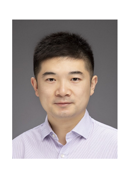
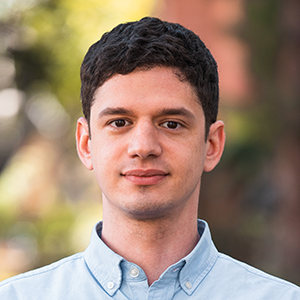
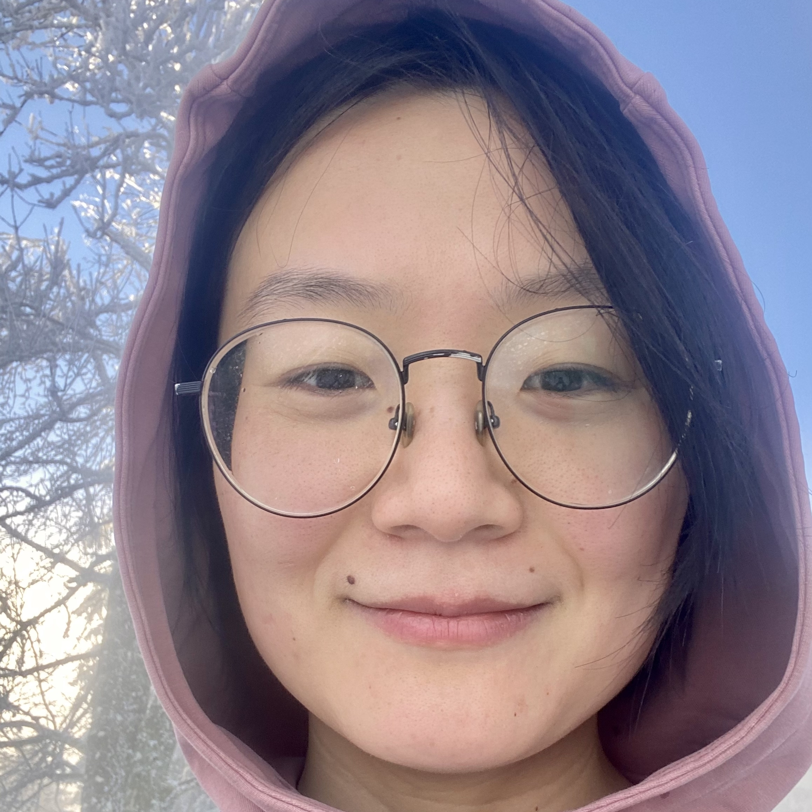

Organization
The SGP 2027 organizing team.
Conference Chair
Technical Program Co-Chairs

Oded Stein
Technion – Israel Institute of Technology; University of Southern California (USC)
Israel / USA

Graduate School Chairs
To be announced
Program Committee
To be announced
Contact
Conference and submission contact details will be announced.